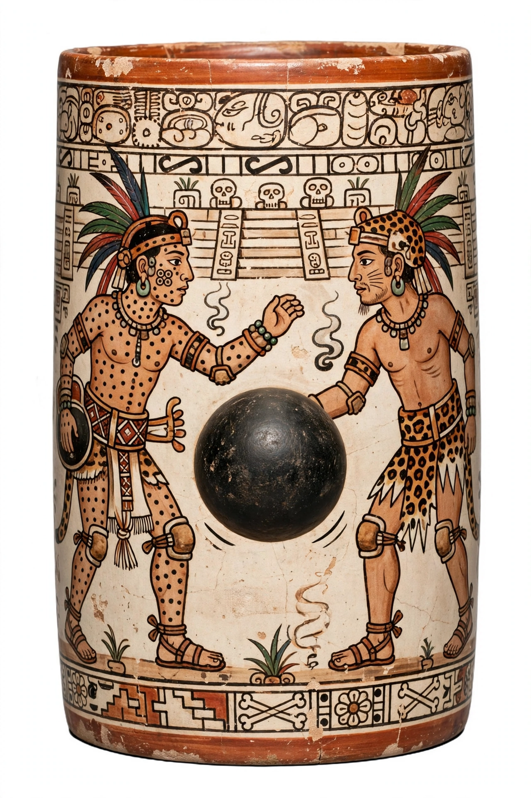

| Maya Hero Twins | |
|---|---|
| Names | Hunahpu and Xbalanque |
| Source | Popol Vuh (K'iche' Maya) |
| Father | Hun Hunahpu |
| Mother | Xquic (Blood Moon) |
| Adversaries | Lords of Xibalba; Vucub Caquix |
| Becomes | The sun and the moon |

The Maya Hero Twins — Hunahpu (Junajpu) and Xbalanque (Xb'alanke) — are the central heroes of the K'iche' Maya sacred narrative the Popol Vuh. Divine ballplayers, monster-slayers, and tricksters, they avenge their father by defeating the lords of Xibalba, the underworld, and are transformed into the sun and moon. Their saga is among the most fully preserved myths of the pre-Columbian Americas, echoed in Classic-period Maya art a thousand years before the surviving text was written.
The twins' father, Hun Hunahpu, and his brother were summoned to Xibalba for disturbing the death lords with their ballplaying, and were sacrificed after failing the underworld's trials. Hun Hunahpu's severed head, hung in a calabash tree, spat into the hand of the maiden Xquic, who conceived the Hero Twins and escaped to the world above. Raised by their grandmother, the twins overcame their jealous elder half-brothers — transformed into monkeys — and cleared fields miraculously before taking up their father's game.
Before their descent, the twins humbled the vain bird-demon Vucub Caquix ("Seven Macaw") and his giant sons. Summoned like their father to Xibalba, they survived the deadly houses — of darkness, razors, cold, jaguars, fire, and bats — through ingenuity, and famously tricked the death lords with a self-sacrificing stage show: Xbalanque "sacrificed" and revived Hunahpu, then performed the same wonder on the lords One Death and Seven Death, who begged for the trick and were not revived. Victorious, the twins ascended into the sky, becoming the sun and moon.
Scenes of the twins — Hunahpu marked by dark spots, Xbalanque by patches of jaguar skin — appear extensively on Classic-period painted ceramics and monuments, including the famous "blowgunner" episodes; their story structured royal ideology and the ritual ballgame across the Maya world.